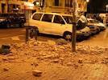

Terremoto de magnitud 6,3 en MelillaUn terremoto de magnitud 6.3 en la escala de Richter con epicentro en el Mar de Alborán se ha dejado notar esta madrugada en Melilla y varias provincias andaluzas, especialmente en Málaga y Granada. El seísmo se ha producido a las 5.22 horas, con hasta nueve réplicas de menor intensidad de entre 2,9 y 4,6, y ha sacado literalmente de sus camas a cientos de melillenses.
|
Adolescentes palestinos  en misión suicida en misión suicidaA sus 13 años, el palestino Mohamed Aju-Jedhai, se suma a la lista cada vez más amplia de jóvenes abatidos en sus ataques a israelíes desde el inicio de la escalada en octubre. Un tercio de los atacantes tenía menos de 20 años en la 'Intifada de los cuchillos'.
|
 cancelados en EEUU
cancelados en EEUU